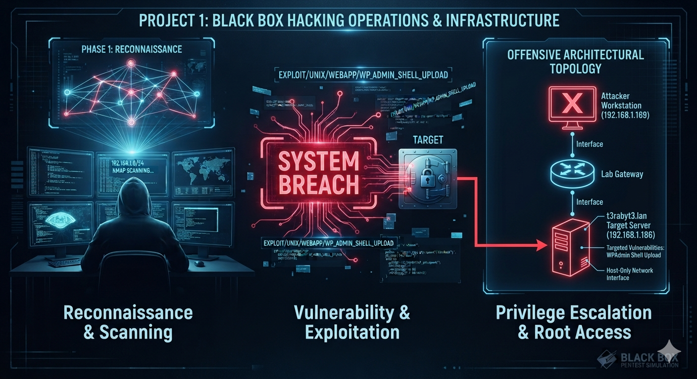

🚀 Project 1: Black Box Penetration Testing Simulation

Authorized compromise analysis targeted against a blind system node to simulate real-world exploit strings, execute standard lateral environment transitions, and bypass sandbox boundary mechanisms.
Core Engagement Phases:
- Reconnaissance & Scan: Exploited active discovery arrays via Nmap platform engines to locate service hooks.
- Credential Extraction: Abused unauthenticated local guest SMB directories to recover cleartext configuration leaks (`deets.txt`).
- Reverse Control Chain: Attached automated exploitation handlers inside web management dependencies via Metasploit interfaces to drop interactive reverse payloads.
- Sandbox Isolation Escape: Neutralized confined local shells (`rbash`) cleanly using dynamic runtime library code injections.